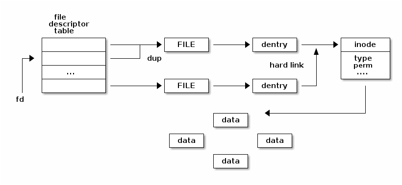
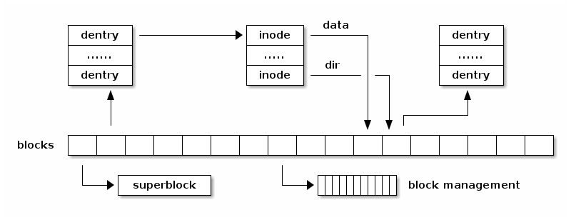

Filesystem Management - Abstractions¶
Filesystem Abstractions¶
A fileystem is a way to organize files and directories on storage devices such as hard disks, SSDs or flash memory. There are many types of filesystems (e.g. FAT, ext4, btrfs, ntfs) and on one running system we can have multiple instances of the same filesystem type in use.
While filesystems use different data structures to organizing the files, directories, user data and meta (internal) data on storage devices there are a few common abstractions that are used in almost all filesystems:
- superblock
The superblock abstraction contains information about the filesystem instance such as the block size, the root inode, filesystem size. It is present both on storage and in memory (for caching purposes).
- file
The file abstraction contains information about an opened file such as the current file pointer. It only exists in memory. (Note : The file name is not a property of the file.)
- inode
The inode is identifying a file on disk. It exists both on storage and in memory (for caching purposes). An inode identifies a file in a unique way and has various properties such as the file size, access rights, file type, etc.
- dentry
The dentry associates a name with an inode. It exists both on storage and in memory (for caching purposes).
Filesystem Abstractions Relationship¶
In Memory¶
The following diagram shows the relationship between the various filesystem abstractions as they used in memory:
Multiple file descriptors can point to the same file because we can use the dup() system call to duplicate a file descriptor.
Multiple file abstractions can point to the same dentry if we the same path multiple times.
Multiple dentries can point to the same inode when hard links are used.
In Storage¶
The following diagram shows the relationship of the filesystem abstraction on storage:
The diagram shows that the superblock is typically stored at the beginning of the fileystem and that various blocks are used with different purposes: some to store dentries, some to store inodes and some to store user data blocks. There are also blocks used to manage the available free blocks (e.g. bitmaps for the simple filesystems).
Reference¶
Linux Kernel Teaching : https://linux-kernel-labs.github.io/refs/heads/master/lectures/fs.html#filesystem-abstractions